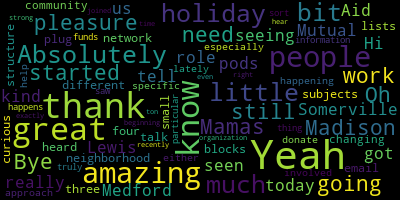

[Callahan]: Hi, I am here with Madison Lewis from Mamas Mutual Aid Medford and Somerville. Madison, thank you so much for being here. Thank you for having me. It's a pleasure to be here today. Oh, yeah. Pleasure to have you. So can you tell us a little bit about Mamas? and how it got started and your role? Absolutely.
[SPEAKER_01]: So MAMA started at the beginning of the pandemic, but mutual aid has been around for generations and MAMA certainly didn't come up with it, but has adopted the mutual aid framework for operating. And so let's see, my role within it, I'm one of the many, many, many volunteers. It was started by a couple of community members back in March and has really grown in leaps and bounds to incorporate many volunteers across many neighborhoods. And what's the purpose? Sure. So the idea behind Mamas is that it's a collective of neighbors of community members coming together to support one another. And, you know, another core part of it is that we believe everyone has something that they need and everyone has something to give. And so the power is really thinking about how can community members come together to identify what the needs are and to support one another with all of the resources that we have when we pool them together. And so Mamas does many, many things. If community members are in need of financial resources, we try to fundraise. If community members need groceries, we deliver them. If community members need diapers for their kids, we try to provide them. And when I say we, it's really the community and it's everyone involved.
[Callahan]: Yeah. I've, you know, kind of seen a little bit of what's going on. It's really amazing seeing like you have pods where each neighborhood, like each, you know, three or four blocks has like its own, you know, small network. And you also have these email lists for different subjects. Can you talk a little bit about the structure just so people know how they can plug in? Oh, absolutely.
[SPEAKER_01]: So I'll talk about a couple of things. The first is that we really try to keep it as horizontal as possible. So yes, a couple of people started it. But in terms of the decision making and kind of the structure behind it, it is very horizontal. And what I mean by that is that it's very community participatory in terms of how are we going to do what next. But in terms of thinking about the pods and the other working groups. So there are one aspect of mamas is these neighborhood pods where you really think about supporting your neighbors at a hyper hyper local level, and so it's working maybe within your block or a couple of blocks to see what people need and what people can give. Then there's also working groups so there's you know the money working group or the delivery working group or the spiritual and emotional working group. And those are groups where people are working on a specific area, such as food or, or other types of resources to to field all the requests that are coming in within that area, and we encourage people to get involved in both ends. Maybe one day you can be someone answering a phone on the hotline, a caller coming in and helping redirect them, and maybe the next day you're the caller on the hotline, and so it's very much bi-directional.
[Callahan]: Great. So I'm curious what have you heard from the community about the need the changing needs so especially like what's been happening lately as we approach the holidays.
[SPEAKER_01]: Sure. So I would say you know some some needs are new and some needs are unfortunately continuing. you know, with COVID, the, you know, there's always financial need, but the financial need has really skyrocketed. And the need for food, obviously, you know, is very much tied with the financial challenges these days. And obviously, that has also been a huge part of Mama's work. I would say another thing that we're specifically responding to now is a lot of people reaching out for winter clothes and warm clothes. during the season. And so Mamas is currently working on a clothing drive to respond to those calls that are coming in.
[Callahan]: Yeah. And how can people either get involved or donate? Like how can people help? Yeah.
[SPEAKER_01]: So there's a lot of ways, which is the exciting part. So, you know, if anyone is interested in joining Mamas, welcome. We would love to have you be part of the community. You can call the hotline. or you can email us, and I can share the number in just one second, but you can email us at askyourmamas at gmail.com. You also can visit our webpage, which is mutualaidmamas.com, and that page is in English, in Portuguese, in Haitian Creole, and in Spanish, or you can call the hotline, which, and the number is 339-545-1315, And from there, we can help connect you and figure out what are you interested in doing? Are you interested in shopping for another family? Are you interested in just hearing what the money group is doing and whether you want to think about making a small contribution each month or you want to help fundraise? Or maybe you wanna give people a call every now and again who are looking for someone to talk to. So there's so many ways to get involved, but either reaching out through the hotline Through checking out our web page or reaching out via email, we can certainly help find what works best for you. And in terms of, you know, any financial contributions in this month as we think about the year and There are a lot of different ways to do it. We have a Venmo account, a Venmo, PayPal, Cash App or Cash. We can contact, work with you to pick up cash. There are a number of people in the community who can't receive funds electronically and so cash or check is really essential. Actually today we're having one of our cash days where we coordinate with with community members to come pick up cash at times that works best for them. And you also can give donations via credit card through our donor box page.
[Callahan]: Yeah, great. Any more specific information about like, because I saw that you have like an $11 holiday thing, like are there any particular sort of holiday, like what happens to those funds?
[SPEAKER_01]: Sure, yeah, thank you for asking. So, The wonderful thing about MAMAs is that while a lot of organizations say we will give money for X, Y, and Z, MAMAs really works on trust. If somebody comes into MAMAs and says I need $100, they need $100 and we're going to try to support them. And so through working with many community members, we've learned that a lot of the funds are going to pay for rent, to pay for food, to pay for other basic living expenses. Sometimes we raise, specifically, like we did a diaper derby, our diaper drive, where we had a lot of requests coming in for diapers. And so we had a specific ask, we're going to try to raise this amount of money to pay for diapers for many families. But you know, so we don't always know exactly what the funds are going to. But from all the conversations, you know, we've had, it's, it's going to basic living expenses, because people are struggling so much these days.
[Callahan]: Yeah. It's truly an amazing, amazing organization started at exactly the right time. And I'm so, it's just so great to hear that it's still going strong. Yeah, they're still doing great work. I know a ton of people who joined recently even, not just at the beginning. So yeah, thank you so much for the work that you're doing.
[SPEAKER_01]: Yeah, thank you. And I think, just if I can add one other thing, I think I've talked a lot about the resource distribution and the physical, but there's also a lot of learning that goes on with MAMAs. So, you know, we had a whole many class, community classes that were free for people to participate. And, you know, typically on Monday nights, there are other types of learning and classes that go on. So, Whether you're interested in getting out into the community and actually physically moving resources, that's great. And if you're interested in participating from the comfort of your home, there's also ways for you to do so.
[Callahan]: But thank you for having me. Amazing. Absolutely. Great to have you. Thank you so much. Thank you. Bye bye.
|
total time: 1.61 minutes total words: 288  |
|||
{kind=link}